Catatan berhenti di minggu kedua
Aplikasi lain minta daftar akun, minta izin, dan punya belasan menu sebelum kamu sempat mencatat satu pengeluaran. Akhirnya nggak kepakai.
Pencatat keuangan + penagih hutang otomatis
Duitku mencatat pemasukan, pengeluaran, dan siapa saja yang berhutang padamu — lalu menyiapkan pesan penagihannya di WhatsApp, lengkap dengan nominal, sisa, dan sudah berapa lama hutang itu berjalan. Tinggal kamu kirim.
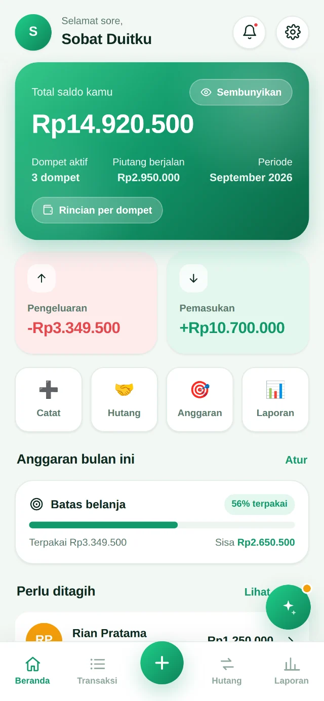
Kenapa Duitku ada
Tiga hal ini yang bikin catatan keuangan berhenti di tengah jalan — dan hutang jadi topik yang dihindari.
Aplikasi lain minta daftar akun, minta izin, dan punya belasan menu sebelum kamu sempat mencatat satu pengeluaran. Akhirnya nggak kepakai.
Hutang dicatat di kepala, di Notes, atau di chat yang sudah ketimbun ratusan pesan. Pas mau ditagih, kamu sendiri nggak yakin angkanya.
Ngetik ulang pesannya dari nol tiap kali, mikirin nada yang pas biar nggak nyakitin, ujung-ujungnya ditunda terus sampai lupa.
Fitur andalan
Buka catatan hutang, pilih nada pesannya, lihat pratinjaunya persis seperti tampilan chat WhatsApp — lalu kirim.
0812-3456-7890, +62 812 3456 7890, atau 812 3456 7890 — semuanya dirapikan otomatis jadi 6281234567890.
Placeholder yang bisa kamu pakai di template sendiri
{nama}{panggilan}{total}{sisa}
{terbayar}{lama}{hari}{tanggal}
{jatuhtempo}{statustempo}{catatan}{pengirim}
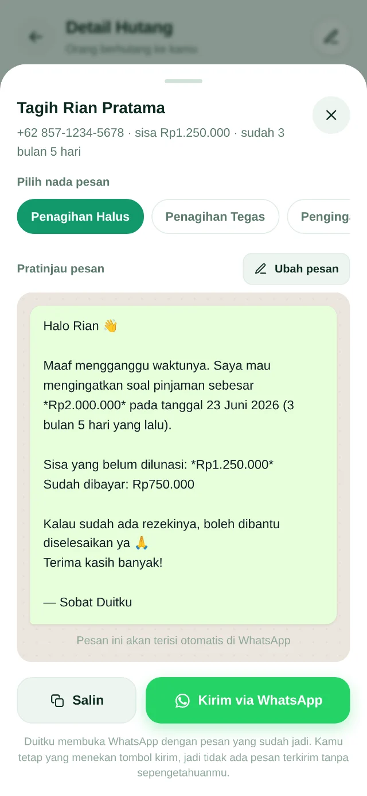
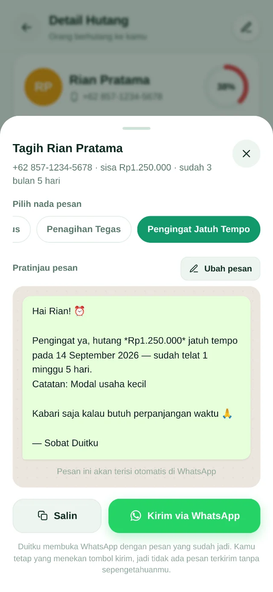
🔒 Riwayat setiap penagihan tersimpan lengkap dengan isi pesannya, jadi kamu selalu tahu kapan terakhir menagih dan apa yang kamu tulis.
Isi aplikasinya
Tanpa fitur yang cuma bikin ramai — semuanya dipakai, semuanya cepat.
Uang tunai, rekening bank, e-wallet, atau dompet buatanmu sendiri — masing-masing punya saldo terpisah dan mutasinya sendiri.
Makan, transportasi, tagihan, gaji, freelance, dan seterusnya. Mau kategori sendiri? Bebas pilih ikon dan warnanya.
Catat yang berhutang padamu maupun yang kamu hutangi, lengkap dengan cicilan, riwayat pembayaran, dan progress bar pelunasan.
Kartu berubah merah begitu lewat tempo, dan yang paling mendesak otomatis naik ke urutan atas. Umur hutang dihitung sendiri.
Batas belanja total atau per kategori. Hijau saat aman, kuning di atas 80%, merah saat jebol — lengkap dengan sisa dan kelebihannya.
Donut per kategori, batang masuk-vs-keluar, rata-rata harian, hari paling boros, dan rasio tabungan. Semua digambar sendiri, ringan.
Bukan sekadar warna dibalik — palet gelapnya dirancang terpisah supaya angka tetap enak dibaca malam hari.
Sekali tekan, semua nominal berubah jadi titik-titik. Berguna saat mencatat di tempat umum.
Ekspor seluruh datamu jadi satu berkas JSON, impor lagi di perangkat lain. Datamu tetap milikmu sepenuhnya.
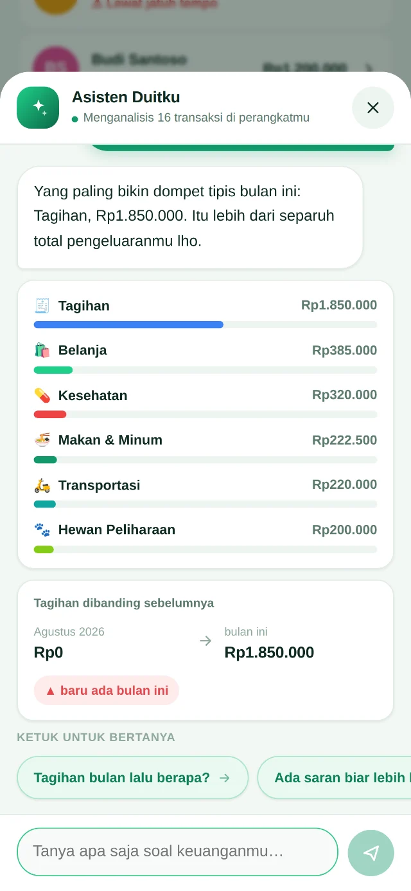
Asisten keuangan
Tombol mengambang di setiap halaman. Ketik pertanyaanmu pakai bahasa sehari-hari, jawabannya keluar berbentuk angka, bar, dan perbandingan.
Bawa keluar datamu
Pilih periodenya — harian, mingguan, bulanan, tahunan, atau rentang tanggal bebas — lalu tentukan sendiri isi laporannya lewat 7 saklar.
Cocok untuk arsip pribadi, laporan ke pasangan, atau lampiran pengajuan pinjaman.
Kirim seluruh data ke spreadsheet-mu sendiri, tanpa server perantara. Spreadsheet-nya tetap privat — yang diakses hanya script kecil yang kamu pasang sendiri.
Panduan pemasangannya ada di dalam aplikasi, lengkap dengan tombol salin kode dan versi PDF-nya.
Tampilan aplikasi
Geser untuk melihat lebih banyak — tersedia dalam mode terang dan gelap.
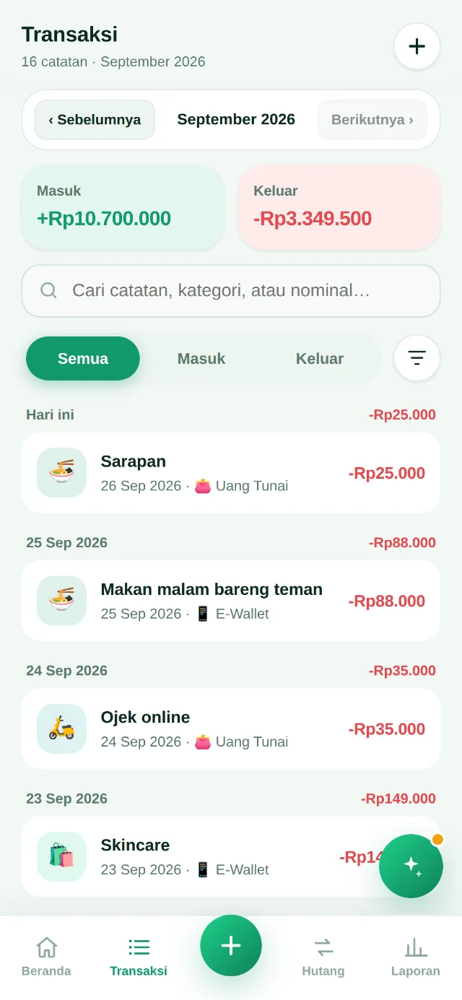
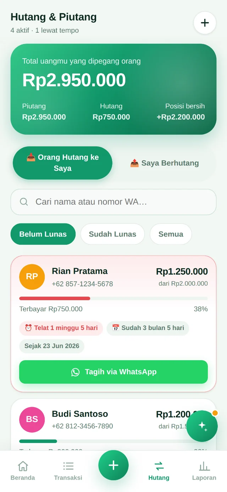
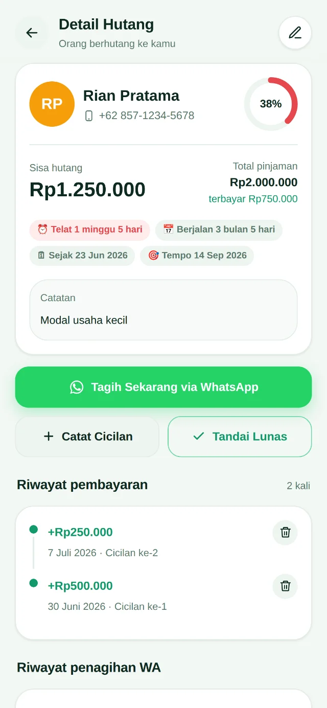
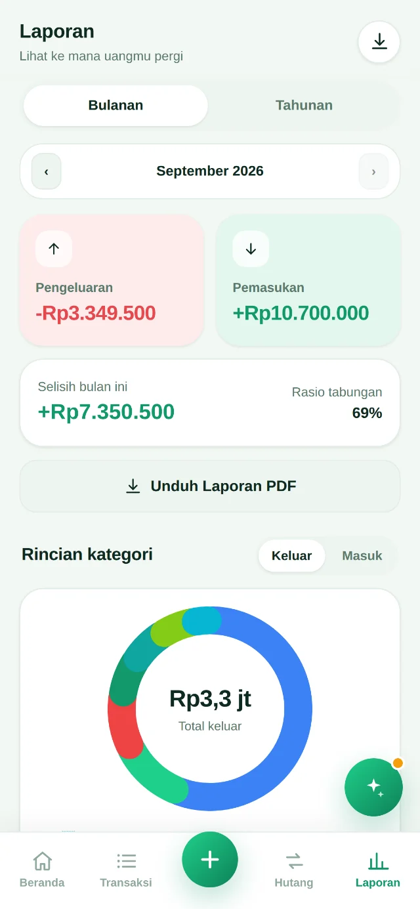
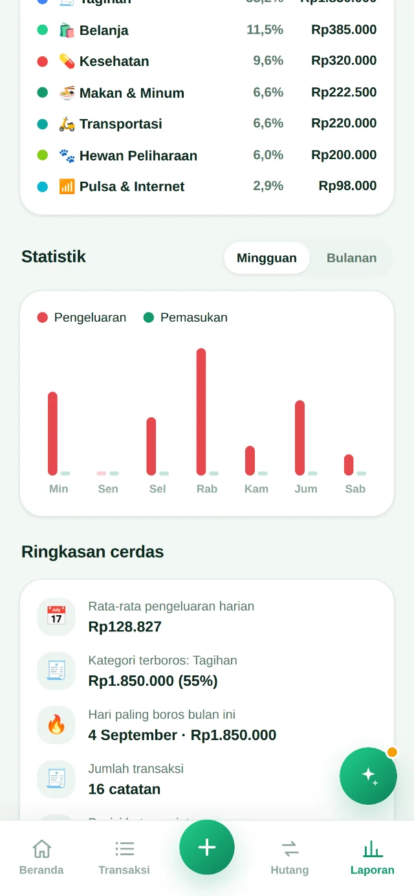
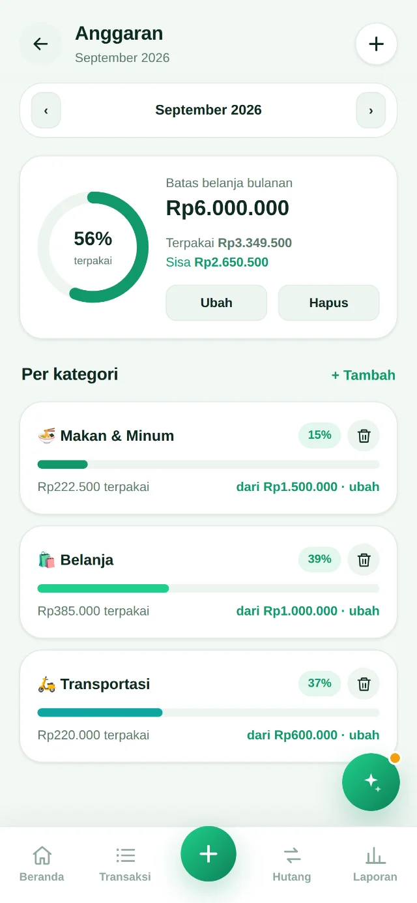
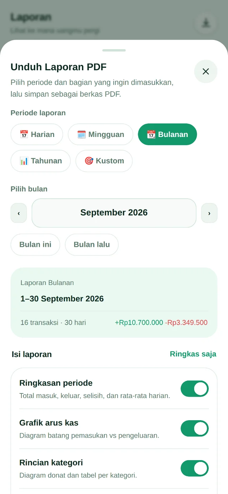
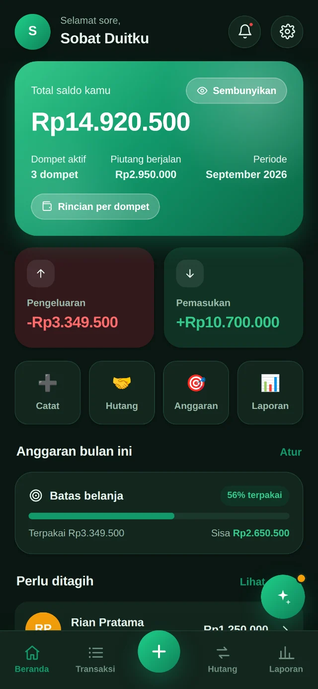
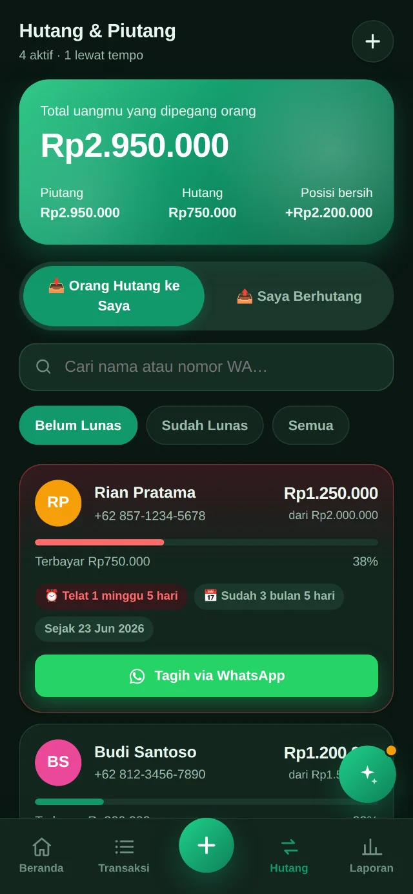
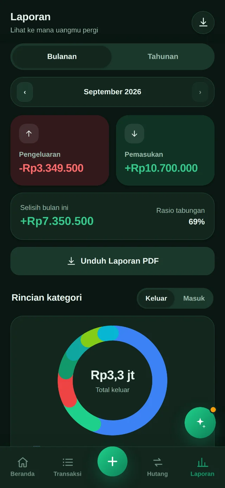
Privasi
Duitku tidak punya server, tidak punya akun, dan tidak punya apa pun untuk dikirim. Semua catatanmu tersimpan di penyimpanan browser perangkatmu sendiri.
Karena catatan hutang memuat nama dan nomor WhatsApp orang lain, ini bukan sekadar fitur — ini keharusan.
Harga
Tanpa langganan bulanan, tanpa biaya server — karena memang tidak ada server yang perlu dibayar.
Duitku
Rp—
bayar sekali, tanpa biaya berulang
Ada pertanyaan sebelum membeli? Cek FAQ di bawah.
FAQ
Di perangkatmu sendiri, lewat penyimpanan lokal browser (localStorage). Duitku tidak punya server, jadi tidak ada tempat lain yang menyimpan catatanmu. Konsekuensinya: kalau kamu membersihkan data browser tanpa mencadangkan dulu, catatannya ikut hilang — makanya ada fitur ekspor cadangan.
Tidak. Duitku hanya membuka WhatsApp dengan pesan yang sudah terisi lengkap di kolom ketik. Kamu masih bisa mengeditnya, dan kamu sendiri yang menekan tombol kirim. Tidak ada pesan yang keluar tanpa sepengetahuanmu.
Tidak untuk fitur utamanya. Mencatat, menghitung, membuat laporan PDF, sampai bertanya ke asisten keuangan semuanya berjalan offline. Internet hanya dibutuhkan saat kamu benar-benar mengirim pesan lewat WhatsApp atau menyinkronkan ke Google Sheets.
Bisa. Duitku adalah aplikasi web (PWA), jadi tinggal dibuka lewat Safari lalu pilih Bagikan → Tambahkan ke Layar Utama. Setelah itu tampil dan terbuka seperti aplikasi biasa. Versi Android tersedia sebagai aplikasi terpasang lewat Capacitor.
Ikut, asal dicadangkan dulu. Di Pengaturan ada Ekspor Cadangan yang menghasilkan satu berkas JSON — tinggal impor di perangkat baru. Kalau kamu mengaktifkan sinkronisasi Google Sheets, salinan datanya juga sudah ada di spreadsheet-mu sendiri.
Tidak ada. Pembayarannya sekali. Karena Duitku tidak menjalankan server apa pun, tidak ada biaya berjalan yang perlu ditutup dengan langganan.
Bisa, selama skalanya masih personal. Catatan hutang-piutang dua arah, cicilan, jatuh tempo, dan penagihan WhatsApp-nya justru paling terasa gunanya di warung, toko kecil, atau pengurus arisan yang sering menalangi dulu.
Ada. Panduan pemasangan dan panduan sinkronisasi Google Sheets tersedia di dalam aplikasi, lengkap dengan tombol salin kode dan versi PDF yang bisa diunduh. Kalau masih tersendat, hubungi kontak yang tercantum di bagian bawah halaman ini.
Catat hari ini, tagih dengan tenang besok. Datamu tetap di tanganmu sendiri.
Dapatkan DuitkuSekali bayar · Tanpa akun · Tanpa langganan